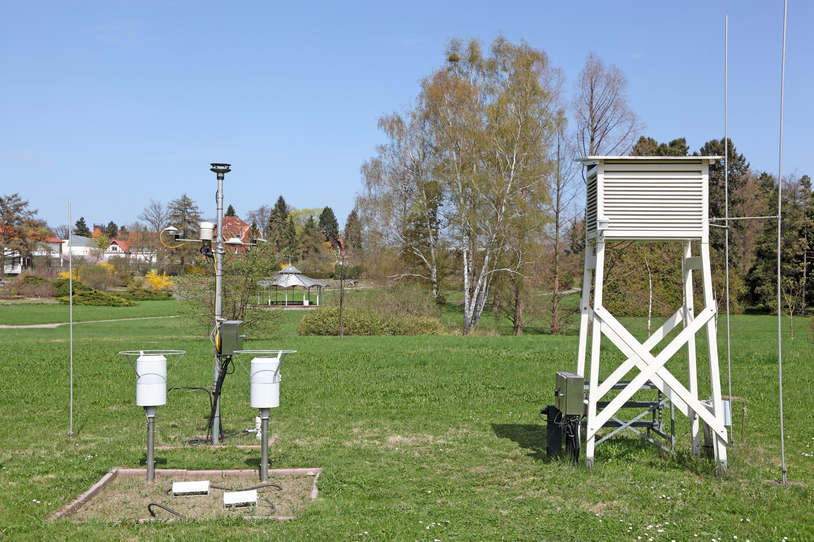

Dies ist die Wetterstation des Botanischen Gartens und gehört zum Messnetz des Instituts für Meteorologie der Freien Universität Berlin.
Die Station zeichnet kontinuierlich meteorologische Parameter wie Lufttemperatur und relative Feuchte auf und liefert wichtige Daten für
Forschung und Klimabeobachtung in der Region Berlin-Dahlem. Sie bildet zusammen mit der Station Fichtenberg die offizielle WMO-Station Berlin-Dahlem 10381.
“Die Natur muss gefühlt werden; wer nur sieht und abstrahiert, kann ein Menschenalter […] Pflanzen
und Tiere zergliedern, er wird die Natur zu beschreiben glauben, ihr selbst aber ewig fremd sein.” (Alexander von Humboldt, 1810)

Wetter für die nächsten sieben Tage
| Montag ❄️ |
Dienstag ❄️ |
Mittwoch ☁️ |
Donnerstag ☁️ |
Freitag 🌧️ |
Samstag ❄️ |
Sonntag ❄️ |
| 0 | -1 | -1 | -2 | -3 | -7 | -6 |
Daten entfernen
Gebe die ID und Zugriffserkennung ein um Wetterdaten der Wetterstation zu löschen.
Wetterdaten wurden gelöscht.